∎
Tel.: +971-262846491,+971-262848232
Fax: +971-26284000
22email: afd8@nyu.edu1, 22email: nf47@nyu.edu2
بنية معرفة برمجياً للتحكم في النظم السيبرانية الفيزيائية لإنترنت الأشياء
الملخص
استناداً إلى مبادئ النظم المعرفة برمجياً، نقترح بنية شمولية لتطبيقات النظم السيبرانية الفيزيائية (CPS) وإنترنت الأشياء (IoT)، ونبرز مزاياها المتعلقة بقابلية التوسع والمرونة والمتانة وقابلية التشغيل البيني والأمن السيبراني. ويستثمر تصميمنا على نحو خاص الوحدات الحاسوبية التي تملكها الوكلاء الأذكياء، والتي يمكن توظيفها للتحكم اللامركزي ولمعالجة البيانات داخل الشبكة. نوصّف تدفق البيانات وتدفق الاتصال وتدفق التحكم التي تستوعب مجموعة من المكونات، مثل الحساسات والمشغلات والمتحكمات والمنسقات، على نحو نظامي قابل للبرمجة. ونستهدف تحديداً اتخاذ القرار الموزع واللامركزي عبر نشر التحكم على عدة طبقات هرمية. إضافة إلى ذلك، نقترح طبقة وسيطة لتغليف الوحدات والخدمات الخاصة بالعمليات الحرجة زمنياً في البيئات عالية الديناميكية. كما نورد طيفاً واسعاً من قابلية التعرض للهجمات السيبرانية، وندمج حلولاً معرفة برمجياً لتمكين الصمود والكشف والتعافي. ومن هذا المنظور، تتعاون عدة متحكمات لتحديد التهديدات الأمنية والحالات غير الطبيعية والاستجابة لها بطريقة ذاتية التعديل. وأخيراً، نعرض محاكاة عددية دعماً لمزايا التصميم المعرف برمجياً في CPS وIoT.
الكلمات المفتاحية:
النظم المعرفة برمجياً (SDSys) إنترنت الأشياء (IoT) النظم السيبرانية الفيزيائية (CPS) النظم الموزعة التحكم اللامركزي الأمن السيبراني البرمجيات الوسيطةشكر وتقدير
دُعم هذا العمل جزئياً من مركز الأمن السيبراني في جامعة نيويورك أبوظبي.
1 مقدمة
يربط إنترنت الأشياء (IoT) gubbi2013internet عدداً ضخماً من الأجهزة «الذكية» (مثل الهواتف المحمولة والحساسات والموجهات والمتحكمات الدقيقة) جنباً إلى جنب مع مراكز بيانات كبيرة، ويوفر آليات لجمع البيانات الضخمة ومعالجتها، وللاتصال، وكذلك للخدمات السحابية. ويوجد إطار وثيق الصلة يتمثل في النظم السيبرانية الفيزيائية (CPS) rajkumar2010cyber ; kim2012cyber ، حيث تُشبك الوكلاء الأذكياء، التي تمتلك قدرات الاستشعار والحوسبة والاتصال والتحكم، للتحكم في الكيانات والعمليات الفيزيائية. وتضم التطبيقات البارزة نظم النقل الذكية (ITS)، والشبكات الكهربائية الذكية، وشبكات الحساسات اللاسلكية WSN ، والمباني الذكية، والرعاية الصحية المتنقلة (mHealth).
وعلى هذا النطاق الواسع، تتجاوز بنى التحكم القائمة قدرتها بكثير على إدارة اقتران الفضاء الفيزيائي بالفضاء السيبراني بكفاءة. وتتضمن التحديات البارزة التي يجب أخذها في الحسبان في تطبيقات IoT وCPS الحاجة الملحة إلى قابلية التكيف وقابلية التوسع والأمن والسلامة والمتانة إزاء التغيرات المفاجئة في طريقة عمل الشبكة rajkumar2010cyber ; lee2008cyber . ويتمثل مسار رئيس في تصميم نظم هجينة hybrid ، تفصل فيها وظائف التحكم البرمجية عن المكونات المضمنة lee2011introduction .
تقدم النظم المعرفة برمجياً (SDSys) نموذجاً منهجياً لتصميم مثل هذه النظم عبر تجريد قوانين التحكم من الأجهزة العتادية في الطبقة الفيزيائية ووضعها في طبقة تحكم معرفة برمجياً. ويُقصد بهذا الفصل توفير حلول تحكم موثوقة وفعالة الكلفة وفي الزمن الحقيقي لـ CPS وIoT. ويمدد هذا المفهوم ويوسع التطوير المنظم للبرمجيات واسعة النطاق، وقد طُرح أولاً في سياق الراديوهات المعرفية mitola2000cognitive . وبعد ذلك، استُخدم لتطوير الشبكات المعرفة برمجياً (SDN) jain2013network ، وكذلك في أوجه وجوانب عدة من IoT SDIoTAla ; al2016novel ; SDCloud .
في هذه الورقة، نستخدم مبادئ التعريف البرمجي لاقتراح تصميم معماري شامل لنظم CPS وIoT. وتستهدف البنية المقترحة تحديداً اتخاذ القرار اللامركزي داخل IoT عبر الاستفادة من الموارد الحاسوبية المنتشرة في الكيانات الكثيرة التي يتألف منها. ونبين كيف يخفض النموذج المقترح تعقيد التحكم ويتيح تكاملاً وتكيفاً مرنين في الفضاء السيبراني. وتتضمن بنيتنا ثلاثة نطاقات رئيسة: الفضاء الفيزيائي، والفضاء السيبراني، وفضاء التحكم المنظم، وكلها موصوفة وفق SDSys. وقد صممت البنية الهرمية واللامركزية لفضاء التحكم بعناية بطريقة تسند مسؤوليات كل وكيل داخل نطاق تقنية IoT. وتجرد خدمات طبقة البرمجيات الوسيطة kim2013real في النموذج المقترح وتعزز لتتعهد بزيادة السلامة والموثوقية والأداء في بيئة عالية الديناميكية، ويرجع ذلك أساساً إلى تغيرات طوبولوجيا الشبكة (الناتجة غالباً من حركة الوكلاء واستنزاف البطارية في الأجهزة المحمولة). علاوة على ذلك، نحدد المتطلبات الرئيسة والحلول المعرفة برمجياً لتحقيق جودة خدمة (QoS) عالية إلى جانب الأمن السيبراني. وتحقيقاً لذلك، نوائم بين سير عمل من أسفل إلى أعلى ومن أعلى إلى أسفل لنشر المعلومات والأوامر التشغيلية في الشبكة. إضافة إلى ذلك، نحدد عدة أصناف من الهجمات السيبرانية ومواطن الضعف المحتملة عبر المستويات المتعددة، ونقترح حلول كشف وتعاف فعالة. وأخيراً، بنينا محاكياً كائني التوجه بلغة Python باستخدام ميزات ومبادئ من محاكيات SDSys عامة الغرض مثل Mininet وMaxinet وMininet-WiFi، ونستخدمه لاختبار وتقييم عدة مؤشرات أداء لوحداتنا المقترحة.
توسع هذه الورقة دراساتنا الأولية في SDCPSconf وتمددها في اتجاهات عدة: (أ) نقدم وصفاً أكثر تفصيلاً لعدة سمات مهمة في البنية ونرسخ الصلات مع تقنية IoT وتطبيقاتها الناشئة؛ (ب) نناقش صراحة تصميماً معرفاً برمجياً للأمن السيبراني في تطبيقات CPS وIoT؛ (ج) نصمم محاكياً كائني التوجه ونتحقق من مزايا نهجنا عبر دراسات محاكاة متنوعة.
تنظم بقية الورقة على النحو الآتي. نناقش تحديات التصميم الرئيسة ذات الصلة بـ CPS في القسم 1.1، ونلخص المفاهيم الرئيسة للنظم المعرفة برمجياً (SDSys) في القسم 1.2. ويخصص القسم 2 لبنية CPS المقترحة المعرفة برمجياً (SDCPS): حيث نعرض متطلبات النموذج (القسم 2.1)، والنظرة المعمارية العامة (القسم 2.2)، والعناصر الرئيسة (القسم 2.3)، وبنية التحكم (القسم 2.4)، وطبقة البرمجيات الوسيطة (القسم 2.5)، وسير العمل (القسم 2.6)، وسمات مهمة أخرى (القسم 2.7). ونختبر جوانب من حلنا المقترح في القسم 3. ويختتم القسم 4 الورقة.
1.1 تحديات التصميم في CPS
لكي تبرز CPS فعلاً بوصفها الثورة الصناعية الرابعة المتصورة rajkumar2010cyber ، يجب الاعتناء بسمات متعددة في النمذجة والاتصال والاستشعار والتحكم والأمن السيبراني. نقدم عرضاً موجزاً للتحديات الرئيسة ومتطلبات التصميم في هذا المجال اللافت gungor2009industrial :
أحجام كبيرة من البيانات: تشكل الحساسات جسراً فعالاً بين الفضاء السيبراني والفضاء الفيزيائي. ففي CPS واسعة النطاق، مثل شبكات النقل والحساسات WSN ، ينتج الاستشعار في الزمن الحقيقي بيانات ضخمة حقاً. ولا غنى عن توفير خوارزميات لترشيح البيانات الضخمة والتنقيب فيها بكفاءة distances ; watermarking في الزمن الحقيقي RCS ; EUSIPCO .
قابلية التوسع: إن العدد الكبير من الأجهزة في CPS، المجهزة بعتاد وبرمجيات غير متجانسة، جانب أولي ينبغي التصدي له في CPS rajkumar2010cyber . ومن الضروري إدارة واجهات API المناسبة من أجل تكامل جاهز للاستخدام وتكوين ذاتي، مصحوباً بنظريات جديدة للاستدلال والتحكم القابلين للتوسع rksimax1 .
قرارات الزمن الحقيقي: تعمل CPS في ظل قيود صارمة للزمن الحقيقي في الاتصال والحوسبة والتحكم. ولذلك فمن الحاسم مراعاة المواعيد النهائية عند تخصيص الموارد واتخاذ القرارات hou2009theory ، وتطوير خوارزميات للحوسبة على الخط RCS ; EUSIPCO ، وكذلك برمجيات يمكنها تيسير تشغيل سلس في الزمن الحقيقي kim2013real .
الأمن وتحمل الأعطال: إن الاقتران بين الفضاءين السيبراني والفيزيائي يفتح الباب أمام كثير من مواطن التعرض للهجمات وإخفاقات المكونات. وفي نطاق CPS، تبرز حاجة إلى خوارزميات جديدة تخفف الافتراض الضمني بسلامة الوكلاء وخلو التشغيل من الأعطال، ويمكنها أيضاً تقديم ضمانات نظرية في وجود مستخدمين خبيثين أو بيزنطيين cardenas2008secure ; SATS ; DSC .
نظريات جديدة: في ضوء التقدم التقني الكاسح، تبرز الحاجة إلى نظريات جديدة gupta2000capacity ; freris2011fundamental ; WSN ; kim2012cyber تتناول CPS من منظور نظري أساسي وتنتج خوارزميات كفؤة ومنخفضة التعقيد ذات ضمانات أداء قابلة للإثبات distances ; rksimax1 .
وخلاصة القول إن أدوات النمذجة والخوارزميات من نظرية النظم وهندسة البرمجيات، المرتبطة بالتجريد والشبكات اللاسلكية والتحقق من النظم والتحكم وتحمل الأعطال، ينبغي استدعاؤها، ولكن ينبغي في الوقت نفسه إعادة النظر فيها. وتحقيقاً لهذه الغاية، يمكن للحلول الموزعة واللامركزية والمعرفة برمجياً أن تمهد الطريق لبناء نظم هندسية للمستقبل غير البعيد كثيراً.
1.2 النظم المعرفة برمجياً (SDSys)
تهدف النظم المعرفة برمجياً (SDSys) إلى فصل الفضاء الفيزيائي عن الفضاء السيبراني عبر سحب وظائف التحكم من العتاد المضمن وتجريدها في طبقة برمجية. وقد أنجز عمل واسع في سياقات عدة: الراديو (SDR) mitola2000cognitive ، والشبكات (SDN) jain2013network ، والأمن sdsec2 ، والتخزين sdstor2 ; SDCache ، والسحابة SDCloud . تعرف الشبكات المعرفة برمجياً (SDN) طريقة جديدة للتحكم في عملية تمرير الرزم في الشبكة. وفي هذا السياق، تتاح محاكيات مفتوحة المصدر مبنية على Python لتقييم أداء البروتوكولات القائمة على SDN، مثل Mininet Mininet وMininet-WiFi fontes2015mininet وMaxinet Maxinet . اقتُرح في SDCloud نموذج معرف برمجياً لإدارة السحابة يمكنه أن يخفف بفعالية عدة تهديدات سيبرانية.
2 SDCPS: البنية المقترحة لـ CPS
في هذا القسم، نوضح بنيتنا المقترحة للنظم السيبرانية الفيزيائية وتطبيقات إنترنت الأشياء، وهي بنية تستند إلى مبادئ النظم المعرفة برمجياً. وتُستغل القدرة الوفيرة والمنتشرة على الاتصال والحوسبة في الأجهزة الذكية لتقديم حل تحكم نظامي خفيف الوزن وآمن وموثوق لإدارة نظم إنترنت الأشياء في الزمن الحقيقي.
2.1 متطلبات النموذج
نعرّف مجموعة من المتطلبات ونصنفها في فئتين رئيستين: 1) متطلبات جودة الخدمة (QoS)، و2) المتطلبات الأمنية.
متطلبات جودة الخدمة:
-
1.
استغلال الموارد: الموارد وفيرة في CPS. وآلية الإدارة الفعالة هي التي تعظم الفوائد الناجمة عن استغلال أكبر قدر ممكن من إمكانات الحوسبة والاتصال والاستشعار والتشغيل المتاحة على نحو متماسك ومتزامن.
-
2.
موازنة الحمل: من المهم استثمار الموارد بطريقة عادلة. وينبغي معالجة طلبات الخدمة في الوقت الملائم مع الحفاظ على موازنة الحمل بين متحكمات النظام المختلفة. ويتمثل هدف رئيس للمجدولات في توزيع عبء العمل بأكبر قدر ممكن من التساوي لتخفيف ازدحام الشبكة وتقليل التأخيرات وتجنب الاختناقات (بمعنى فرط استخدام الاتصال أو الحوسبة)، وهي اختناقات قد تستنزف بطاريات الأجهزة الذكية البعيدة ومن ثم تضر بتشغيل النظام إضراراً شديداً.
-
3.
الزمن الحقيقي: يفرض التحكم في الكيانات الفيزيائية مثل السيارات والحساسات والشبكات الذكية وعمليات الرعاية الطبية قيوداً صارمة للزمن الحقيقي. ومن ثم فمن المهم تحديد مواعيد نهائية لإنجاز المهام الحرجة زمنياً وتصميم مجدولات في الزمن الحقيقي hou2009theory ; kim2013real تفي بها على نحو قابل للإثبات.
المتطلبات الأمنية:
يشكل الأمن السيبراني هاجساً رئيساً في نظم التحكم الشبكية الحديثة، حيث تكتسب أهمية حيوية لتصميم آليات فعالة وتنفيذها بغية منع طيف من الهجمات السيبرانية وكشفها والتعافي منها. ويمكن استيعاب هذا الهدف بطرائق متعددة ومتكاملة، مثل: (أ) التشفير، الذي يحقق خصوصية البيانات وكذلك الأمن في الاتصال القائم على الرزم DSC ، (ب) النهج القائمة على التحكم tabuada ; SATS ; satchidanandan2017dynamic التي تسعى إلى تحديد الهجمات وكذلك التعامل مع الهجمات «الخفيّة» (عبر ضمان ألا تضر الهجمات غير القابلة للكشف بتشغيل النظام)، (ج) الحلول القائمة على البرمجيات، حيث تُمنح المهام والكيانات المختلفة امتيازات ديناميكياً بواسطة وحدة أمنية مخصصة في النظام.
في CPS، تتطور استراتيجيات الهجوم باستمرار. وتبعاً لذلك، ينبغي تحديث الأدوات المختلفة الخاصة بمسح التهديدات وعزلها وحلها باستمرار كي تفي بمهمتها الحاسمة. وتنطبق نماذج هجوم عدة في نطاق CPS ونظم IoT (انظر أيضاً yampolskiy2013taxonomy ):
-
•
أحصنة طروادة: أحصنة طروادة هي ملفات برامج قابلة للتنفيذ يحقنها مستخدمون خبيثون في الإنترنت. وتُفعّل آثار حصان طروادة عندما ينزله المستخدم وينفذه. ولها أنواع عدة: أحصنة طروادة الإرسالية، وأحصنة طروادة ذات الوصول البعيد، وأحصنة طروادة الوكيلة، وأحصنة طروادة حجب الخدمة (DoS)، وأنواع كثيرة أخرى.
-
•
هجوم DoS/DDoS: يشير حجب الخدمة (DoS) إلى فعل منع المستخدم من الوصول إلى موارد النظام. أما حجب الخدمة الموزع (DDoS) فهو نوع من هجمات DoS تُستخدم فيه عدة نظم مخترقة لاستهداف نظام واحد عبر جعل مجموعة فرعية من الموارد غير متاحة له.
-
•
هجوم تزوير الرزم: يعرف هذا أيضاً باسم «حقن الرزم»، وينطوي على إنشاء رزم تبدو طبيعية لتعطيل الاتصال المباشر بين المستخدمين. ونتيجة لذلك، يمكن إطلاق هجمات «الرجل في الوسط»، حيث يمرر المهاجم الرسائل سراً وربما يعدلها بين طرفين يظنان أنهما يتواصلان مباشرة. وهناك أدوات عدة يستطيع المهاجم استخدامها لتوليد مثل هذه الهجمات، مثل TCPinject وpackETH.
-
•
هجوم أخذ البصمة: يتنصت المهاجم على المحادثة (حتى إن كانت مشفرة) بين مستخدمين ويحصل على بعض السمات الحرجة للمرسل/المستقبل بهدف تحديد حالة الشبكة وتحليل أنماط حركة المرور بقصد تنفيذ أفعال ضارة.
-
•
هجوم طبقة التطبيقات: يصنف هذا النوع إلى أربعة أصناف: يستخدم الأول طلبات بروتوكول HTTP لإغراق موقع ما، ويعكس الثاني تهديدات لبروتوكول SMTP، ويتعلق الثالث ببروتوكول FTP، أما الأخير فيخص هجمات SNMP الهادفة إلى مراقبة النظام وإعادة تكوينه. وعادة ما يكون كشف مثل هذه الهجمات أصعب بكثير من كشف الهجمات على طبقة الشبكة.
-
•
هجمات المستخدمين: في هذا النوع من الهجمات، يسعى مستخدم خبيث إلى خداع المشرف للحصول على الامتيازات نفسها التي يملكها مستخدم مشروع، مثلاً عبر استغلال ثغرات في آلة محلية لإنشاء حساب داخلها. ولهذا الهجوم أشكال مختلفة، مثل هجومي U2R وR2L.
يستغل المستخدمون الخبيثون عدم تجانس CPS لإطلاق هجمات على جميع مكونات النظام؛ ويؤدي ذلك إلى تصنيف إضافي للهجمات إلى:
-
1.
هجمات مرتبطة بالحساسات: يحاول المهاجم التنصت على البيانات المستشعرة أو تغييرها من أجل تقويض تشغيل النظام.
-
2.
هجمات مرتبطة بالمشغلات: يسعى المهاجم إلى تغيير أوامر التحكم الخاصة بمشغل ما.
-
3.
هجمات مرتبطة بالمتحكمات: هجمات على عمليات اتخاذ القرار عالية المستوى، مثل المجدولات والمرسلات وخدمات البرمجيات الوسيطة.
-
4.
هجمات مرتبطة بالاتصال: قنوات الاتصال أهداف رئيسة للمهاجمين. وتوجد طرائق كثيرة للدفاع عن القنوات، تقوم أساساً على التشفير والترميز.
2.2 SDCPS: “نظرة عالية المستوى”
في هذا القسم، نقدم بنية نظام SDCPS ونوضح كيف تُنظم فضاءاته وعناصره داخل نظم IoT. تظهر في الشكل 1 نظرة عامة، «عالية المستوى»، إلى النموذج المقترح المعرف برمجياً لـ CPS (SDCPS).
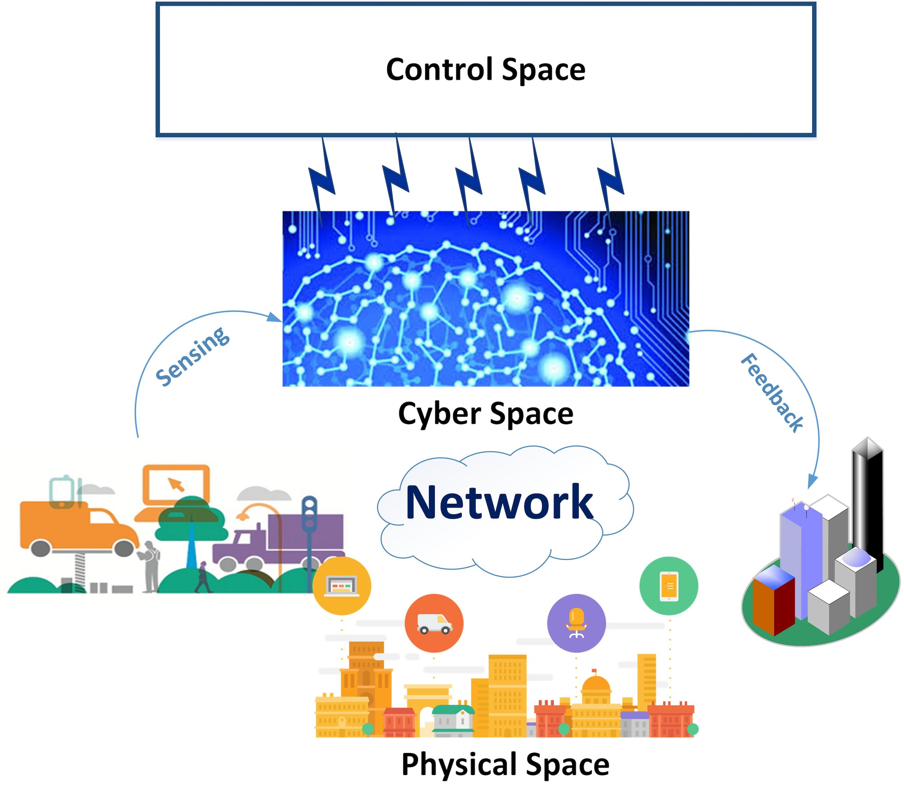
تمتد الجوانب الرئيسة للبنية المقترحة عبر ثلاث طبقات.
-
A.
الفضاء الفيزيائي:
تُضمّن في هذا الفضاء الكيانات الفيزيائية التي تحتاج نظم IoT إلى إدارتها والتحكم فيها. خذ مثالاً على ذلك المنزل الذكي، الذي يضم عدة أجهزة مثل أجهزة التلفاز والتدفئة والتكييف والأفران والغسالات والأبواب، وكثيراً من الكيانات الأخرى التي تحتاج إلى التحكم فيها محلياً أو عن بعد بطريقة مترابطة. ومثال آخر هو نظم النقل الذكية (ITS)، حيث يضم الفضاء الفيزيائي السيارات وإشارات المرور والحساسات وما إلى ذلك. وينظم الفضاء الفيزيائي في نطاقات ونطاقات فرعية يمكنها التفاعل مع الفضاء السيبراني عبر الحساسات والمشغلات والمرسلات.
-
B.
الفضاء السيبراني: يغلف هذا الفضاء العتاد والبرمجيات المخصصة للاتصال والاستشعار وجمع المعلومات ومعالجتها. ويشمل حساسـات ومشغلات ونقاط وصول غير متجانسة. وتعتمد كمية هذه الأجهزة وجودتها على تطبيق IoT قيد النظر. فعلى سبيل المثال، قد تتطلب نظم النقل الذكية وحدات معالجة أقوى مقارنة بالمنازل الذكية. ومن السمات المهمة للتجريد في SDCPS أنه، بصرف النظر عن نوع الأجهزة أو عددها أو التطبيق القائم، يمكن تثبيت فضاء التحكم ذاته وتنظيمه فوق الفضاء السيبراني لإدارة الفضاء الفيزيائي.
-
C.
فضاء التحكم: هذا هو قلب البنية المقترحة، حيث تهيأ جميع عمليات اتخاذ القرار وتتخذ. ويشمل هذا الفضاء المرسلات والمجدولات ومتحكمات الأمن والمنسقات.
تعد طبقة التحكم الموزعة النقطة المحورية في نموذجنا المقترح، كما هو موضح في الشكل 2. يهيكل الفضاء الفيزيائي في عدة مناطق ونطاقات فرعية، يتحكم في كل منها متحكم محلي مناظر ويديرها. وتتواصل المتحكمات المحلية بعضها مع بعض لتبادل المعلومات بغية اتخاذ قرارات تعاونية. ففي نظم النقل، على سبيل المثال، يمكن تقسيم مدينة معينة إلى مناطق مختلفة، يتحكم في كل منها مركز محلي للتحكم المروري، حيث تتبادل المتحكمات المحلية في المناطق المختلفة المعلومات وإجراءات التحكم لتحسين ظروف المرور المجربة في كامل المنطقة الحضرية.
يعرض الشكل 3 لبنة البناء لتركيب متعدد الطبقات يمكن فيه دمج نطاقات فرعية مختلفة بطريقة رأسية (أي هرمية) أو أفقية (أي لامركزية).
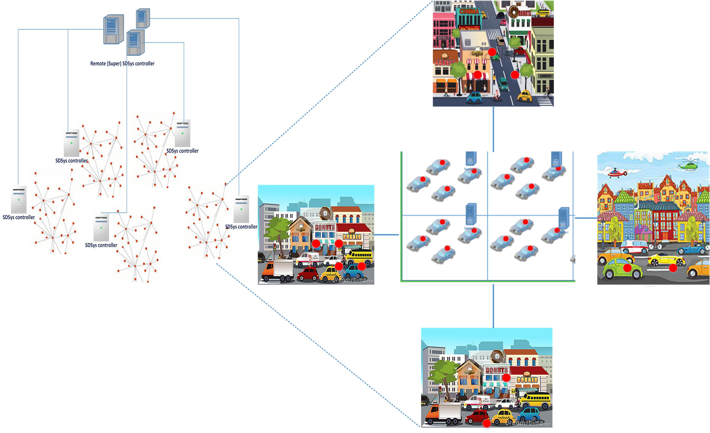
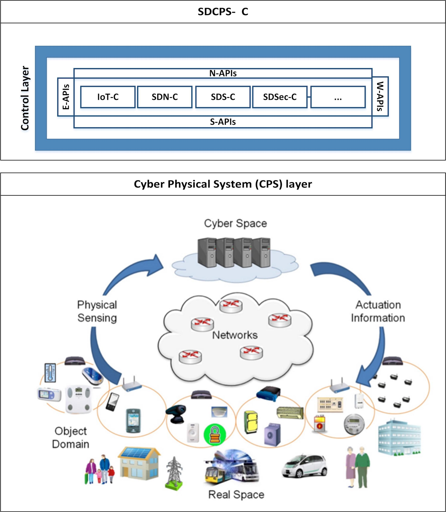
2.3 العناصر المعمارية
نقدم المكونات والعناصر المعمارية الرئيسة في SDCPS مع أدوارها ومسؤولياتها وتفاعلها داخل تطبيقات IoT. ولإقامة قياس مع نظم التحكم، نستخدم لغة النظم الديناميكية الخطية11 1 نستخدم نظم خطية حتمية ثابتة زمنياً دون فقدان للعمومية، وذلك تبسيطاً للعرض. وللسبب نفسه، نفترض رسماً بيانياً اتصالياً غير موجه.:
| (1a) | |||||
| (1b) | |||||
حيث يدل على الحالة والقياس ودخل التحكم للنبتة عند الزمن . نرمز إلى تقديرات الحالة (مثلاً، كما تُستحصل بترشيح كالمان) بـ . كما نمثل طوبولوجيا شبكة الاتصال برسم بياني غير موجه\@footnotemark ، حيث يمكن لنظامين فرعيين أن يتواصلا عند الزمن إذا وفقط إذا كان ؛ ويكون الرسم البياني متغيراً زمنياً عموماً بسبب حركة الوكلاء، وكذلك بسبب خصائص الوسط اللاسلكي. وبالنسبة إلى عقدة ، نعرّف جوارها .
العقد الفيزيائية
-
1.
العقدة المتنقلة: كيان ذو موقع متغير زمنياً بسبب الحركة (خذ مثلاً المركبات في شبكة نقل).
-
2.
العنقود: يمكن تقسيم النظام إلى عدة عناقيد تتكون من ذرات متعددة (عقد متنقلة). وتتغير علاقة انتماء كل عقدة إلى عنقود عبر الزمن، إذ قد تشارك العقد المتنقلة في عناقيد مختلفة، وذلك أساساً بناءً على موقعها.
العقد السيبرانية
-
1.
الحساس: يجمع الحساس معلومات من محيطه كما تحدده دائرة استشعاره. وتُرشح البيانات الناتجة محلياً ثم تُمرر إلى الحساس التجميعي المناظر. وقد تملك كل عقدة متنقلة عدة حساسـات. وهذا يناظر مُدخلاً (أو مجموعة فرعية من المُدخلات) من المتجه .
-
2.
الحساس التجميعي: لكل عقدة متنقلة حساس تجميعي واحد يلخص معلومات الاستشعار المجمعة من الحساسات الموجودة على متنها. وهذا هو بالضبط ما رمزنا إليه بمتجه القياس .
-
3.
المشغل: تستخدم المعلومات المجمعة بواسطة النظام (عبر طبقات تحكم علوية خارجية) والمتحكم المحلي لتركيب دخل التحكم للمشغل، أي . وتتمثل الأفعال اللامركزية في تحديد مدخلات منفردة من ، في حين تصف قوانين التحكم الموزعة استراتيجيات لتركيب من .
-
4.
نقطة الوصول: ترتبط عدة حساسـات بالنظام عبر نقاط وصول للاتصال اللاسلكي.
المنسقات
-
1.
المنسق المحلي: هذا المتحكم مسؤول عن اتخاذ إجراءات لمجموعة فرعية من العقد المتجاورة عبر جمع البيانات من الوكلاء المناظرين. وفي مثال المنزل الذكي، يمكننا تنظيم المنزل في عدة مناطق محلية، أي غرف، يدير كل واحدة منها منسق محلي. وفي هذه الحالة، لا تتطلب قرارات عدة، مثل تشغيل/إطفاء الضوء في غرفة، أي معلومات من حساسـات في غرفة أخرى.
-
2.
منسق العنقود: يسند كل عنقود إلى منسق يطبق الأدوار والإجراءات على العقد المرتبطة ضمن مجال تأثيره. وتشكل الأدوار الرئيسة لإدارة العقد والتحكم فيها، ونقل المعلومات من/إلى منسقي العناقيد الآخرين، وتحديث البرمجيات الوسيطة (راجع القسم 2.5) بحالة العقد المرتبطة به، والحصول على القواعد والتعليمات من الطبقات العليا عبر البرمجيات الوسيطة وتنفيذها. وكمثال في تطبيق المنزل الذكي، تُدار عدة غرف ويُتحكم فيها بواسطة متحكم عنقود للحفاظ على توازن إمداد الطاقة بينها جميعاً.
-
3.
منسق المنطقة: في تطبيق المنزل الذكي يمكن أن يكون هذا هو منسق الطابق، حيث تُدار عدة عناقيد ويُتحكم فيها بواسطة هذا المنسق. وهذا الكيان متحكم فوقي يحدد قواعد الاستراتيجيات الموزعة واللامركزية، مثل الاختيار من مجموعة فرعية من القواعد والامتيازات في كل لحظة قرار (أي كيفية تصميم مصفوفات التغذية الراجعة } في مثالنا المعياري).
يمكن للمنسقات اتخاذ إجراءات بناءً على معلومات مكتسبة من موارد عدة كما هو مبين في الشكل 4.
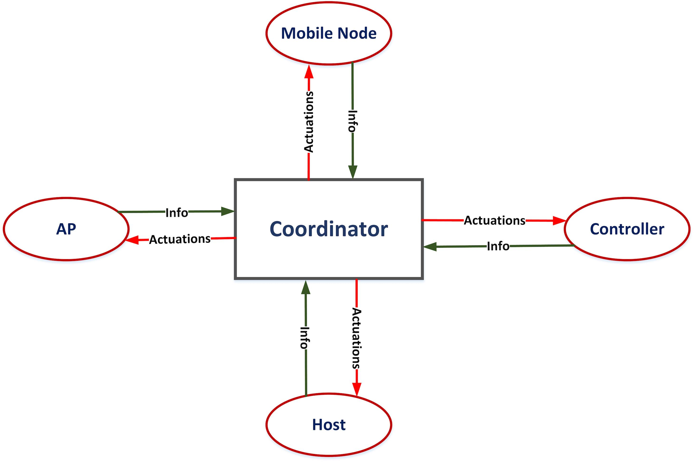
المتحكمات
-
1.
المتحكم الذاتي: لكل عقدة متنقلة، مثل مركبة في نظام النقل، متحكم مستقل يسمى المتحكم الذاتي. ويأخذ معلومات من الحساسات التجميعية كدخل، أو في بعض الحالات قد يأخذ أوامر أعلى من المنسق المحلي والمتحكمات لإطلاق قرار تحكم ذاتي.
في مثالنا الجاري، قد يكون المتحكم الذاتي قانون تحكم تغذية راجعة مستقلاً، أي
كما في الحفاظ على سرعة ثابتة لمركبة معينة، وفق ما تحدده منسقات ومتحكمات أخرى.
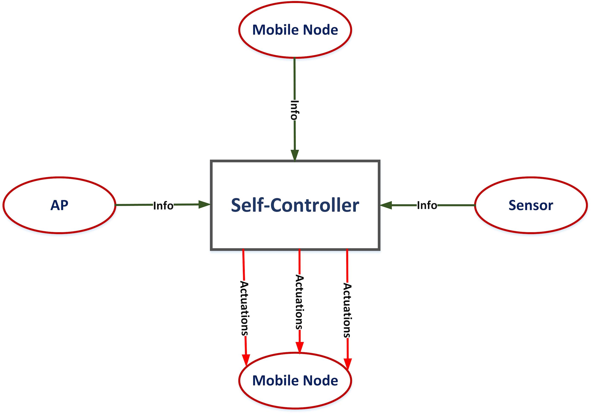
Figure 5: تدفق الاتصال (المعلومات والتشغيل) عبر المتحكم الذاتي؛ AP: نقطة وصول. -
2.
المتحكم المحلي: تتخذ القرارات المحلية التي لا تتطلب أذونات من متحكمات الطبقة العليا بواسطة المتحكم المحلي. وتُكتسب المعلومات اللازمة لاتخاذ هذه القرارات من الحساسات التجميعية في العقدة المتنقلة ذاتها أو من تلك الموجودة في الوكلاء المجاورين.
يكمن الفرق بين المنسق المحلي والمتحكم المحلي في أن المنسق قد يتخذ قراراً متعلقاً بأكثر من عقدة واحدة (فالمنسق يعرّف سياسات التحكم التي يكون المتحكم مسؤولاً عن إنفاذها).
وبمصطلحات التحكم، يكون المتحكم المحلي تحكماً محلياً بالتغذية الراجعة على الصورة:
-
3.
المتحكم الأعلى: علاقته بالمتحكم المحلي كعلاقة المتحكم المحلي بالمتحكم الذاتي. فهو يمكّن ويدعم عملية اتخاذ القرار الهرمية من أعلى إلى أسفل، بينما تتدفق المعلومات من أسفل إلى أعلى.
في مثالنا، يصمم المتحكم الأعلى مكاسب التغذية الراجعة وفق اعتماد شجري.
-
4.
المتحكم العام: يمثل هذا المحرك في النموذج المقترح، ويقع في جذر النموذج الهرمي. وتنشأ كل القرارات الحرجة وعالية المستوى عند هذا المتحكم. وله رؤية شمولية لجميع العقد البعيدة.
في مثال نظام النقل، يمكن أن نقول إن لأجزاء مختلفة من السيارة متحكمها الخاص، مثل التوجيه والمحرك والأضواء، حيث تُدار كل هذه الأجزاء ويُتحكم فيها بواسطة متحكم محلي. وتدار المتحكمات المحلية لجميع السيارات داخل منطقة محددة ويُتحكم فيها بواسطة متحكم أعلى عندما تكون هناك حاجة إلى إنفاذ قرار في تلك المنطقة، مثل أغراض تجنب التصادم.
يمكن استنتاج مجموعة من خيارات التصميم لتقرير عدد الطبقات وعمق مستويات المتحكمات بناءً على خصوصيات التطبيق قيد النظر. وفي هذا الجانب، تكون المفاضلات حاضرة في كل مكان: سرعة الاستجابة مقابل موازنة الحمل مقابل الأمن مقابل التعقيد، وهكذا. وكمثال، يعني تقسيم الشبكة إلى عدة عناقيد أن المتحكم الأعلى مسؤول عن التحكم في عدد أقل من العقد ذات المستوى الأدنى. وقد يسرّع ذلك نقل القرارات وموازنة الحمل، لكنه من جهة أخرى قد يزيد تعقيد تركيب التحكم وقابلية التعرض لعدد من الهجمات السيبرانية. وقد توجد سيناريوهات مختلفة؛ فلا توجد خيارات مطلقة أو واضحة في CPS، ويجب دراسة كل شيء بوصفه جزءاً من كل مشترك.
الواجهة: البرمجيات الوسيطة
تتصل المنسقات والمتحكمات العليا والدنيا عبر جسر يسمى البرمجيات الوسيطة. وهي المقر البرمجي للمجدولات والخدمات والمرسلات وعدة متحكمات معرفة برمجياً.
يكمن التحدي الرئيس في تصميم البرمجيات الوسيطة في تعظيم قابلية التوسع وقابلية التكيف والموثوقية. وتستعير بنيتنا المقترحة مبادئ من Etherware kim2008architecture ، الموجهة للتحكم الشبكي بفضل قدراتها في الزمن الحقيقي kim2013real .
تتكون البرمجيات الوسيطة من نوعين من المكونات: متحكمات وخدمات. فالأولى مجموعة من متحكمات SD مطورة للتحكم والتنسيق بين السيبراني والفيزيائي، أما الثانية فمسؤولة عن إدارة الاتصال بين المتحكمات وتبسيط التثبيت والتطوير والتنفيذ. وبالنسبة إلى خدمات الزمن الحقيقي، يعد مجدول الزمن الحقيقي مكوناً رئيساً في البرمجيات الوسيطة: تُسند إلى الرزم والأوامر أولويات ومواعيد تنفيذ نهائية مختلفة يجب استيعابها بوساطة الجدولة مع ضمانات QoS hou2009theory . وسيقدم وصف أكثر تفصيلاً لطبقة البرمجيات الوسيطة في القسم 2.5.
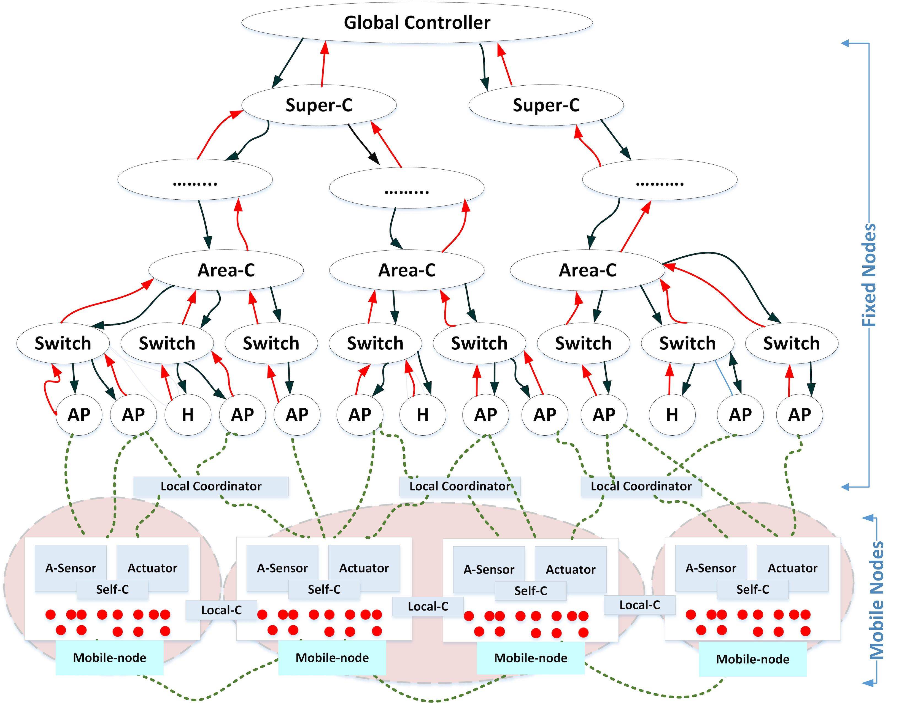
يلخص الشكل 6 التفاعلات والترابطات بين مكونات النظام.
2.4 بنية التحكم
في هذا القسم، نقترب أكثر لمناقشة وحدات ومكونات النموذج المقترح بمزيد من التفصيل؛ انظر الشكل 7.
البنية الفيزيائية
تتكون البنية الفيزيائية لكل متحكم من عدة معالجات، ويُطابق كل معالج مع وحدات معالجة متعددة. ويمكن للمتحكم تشغيل عدة عمليات في وقت واحد بطريقة متعددة الخيوط. علاوة على ذلك، يمكن الاستفادة من وحدات CPU وGPU، ويستخدم متحكم أحادي المرور لأنه عادة أسرع وأبسط من نظيره متعدد المرور، ويساعد في تحسين موثوقية النظام وأمنه وأدائه. وتستخدم الأنابيب بين خيوط المنتج/المستهلك كقنوات اتصال احتياطية لأغراض أمنية.
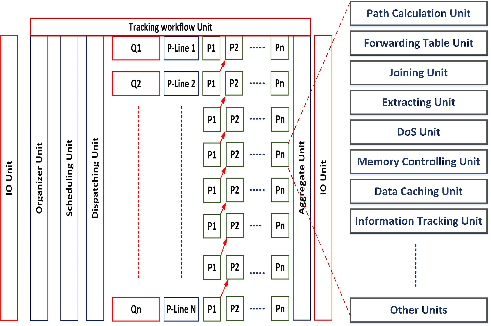
البنية المنطقية
تثبت مجموعة من المتحكمات (الفرعية) المخصصة المعرفة برمجياً في كل متحكم، وتتواصل هذه المتحكمات وتتعاون بعضها مع بعض للحفاظ على سير عمل سلس. يوضح الشكل 8 المنظور المنطقي.
كل واحد منها مجهز بعدة وحدات نقدمها ونعرّفها فيما يلي. وبالتحديد، نعرض كيف تعمل هذه الوحدات، إلى جانب مسؤولياتها الرئيسة، معاً للتحكم في تطبيقات IoT وإدارتها بطريقة معرفة برمجياً.
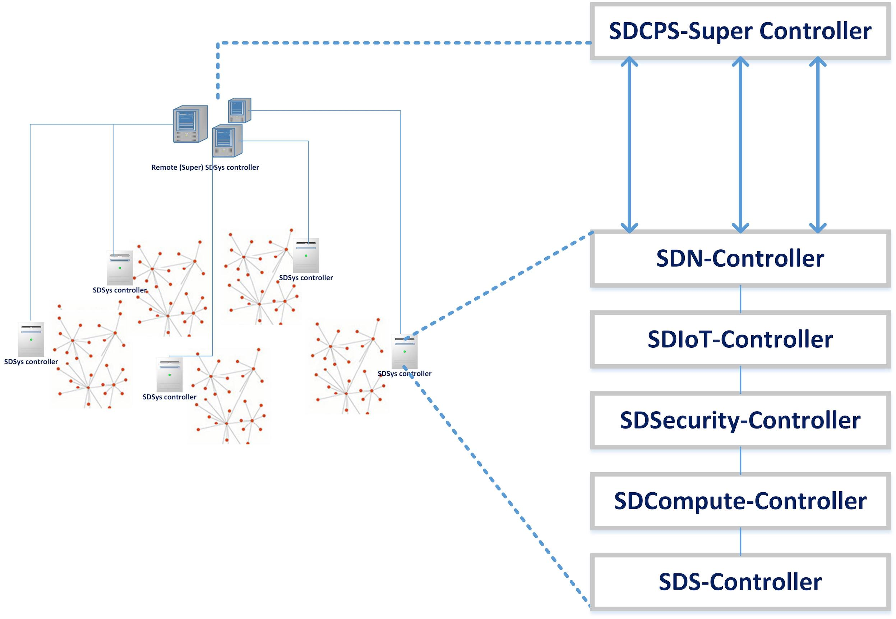
SDN_Controller: هذا المتحكم مسؤول عن التحكم في الجزء الشبكي من النظام وإدارته. فهو يحتفظ بمعلومات الشبكة لجميع العقد ضمن مجاله، وتستخدم هذه المعلومات في توليد جداول التمرير. وتُمرر هذه الجداول إلى المفاتيح المتصلة بهذا المتحكم لأغراض الاتصال متعدد القفزات. ويمكن اتباع خوارزميات مختلفة لتوليد هذه الجداول مثل الشجرة الممتدة الدنيا، والمسار الأقصر، وما إلى ذلك)، بحسب هدف كل تطبيق IoT. فعلى سبيل المثال، في نظم النقل، يجب اتخاذ قرارات في الزمن الحقيقي، وفي مثل هذا الوضع تكون الخوارزميات التي تستهدف تحديداً الجدولة في الزمن الحقيقي مفيدة.
الوحدات الرئيسة داخل SDN Controller هي:
-
1.
وحدة حساب المسار: حساب المسار من المصدر إلى الوجهة هو مسؤولية هذه الوحدة. ويختار مثل هذا المسار بناءً على عدة معايير.
-
2.
وحدة توليد جدول التمرير: تولد جميع جداول التمرير داخل هذه الوحدة بناءً على مخرج وحدة حساب المسار. وتولد هذه الجداول وتخزن بواسطة هذه الوحدة. كما تحصل على تغذية راجعة من وحدة تتبع حالة الشبكة لتعديل المسار المحسوب عند الحاجة، كما يوضح لاحقاً.
-
3.
وحدة تتبع حالة الشبكة: تتعقب هذه الوحدة أي تغير (اختناقات، أو تدهور القناة، أو روابط مقطوعة) في حالة الشبكة. فعلى سبيل المثال، في شبكة نقل، عندما يُبنى طريق جديد في منطقة محددة، تستقبل هذه الوحدة إشعاراً بهذا التحديث لاتخاذ إجراءات إضافية.
تتوفر أيضاً وحدات أخرى لتمكين انضمام العقد واستخراجها.
SDIoT_Controller:
تُحفظ هنا جميع المعلومات المتعلقة بالأجهزة الذكية في تطبيق IoT. وتستخدم معلومات مثل الحالة المنطقية والموقع الفيزيائي في عملية التنسيق والإدارة.
-
1.
وحدة تتبع معلومات الجهاز الذكي: يتمثل دور هذه الوحدة في مسح الأجهزة الذكية وتعقبها بحثاً عن الطلبات التي يجب إيصالها إلى المتحكمات المختلفة.
-
2.
وحدة تتبع حالة الجهاز الذكي: هذه الوحدة مسؤولة عن تتبع حالة الجهاز الذكي ذات الصلة بالاتصال والتشغيل (مثلاً: مشغول، يرسل، يستقبل، «نائم» في تدوير الواجب، بطارية منخفضة، وما إلى ذلك).
-
3.
وحدة تتبع موقع الجهاز الذكي: بما أن العقد المتنقلة تتحرك، فإن الموقع الفيزيائي للأجهزة الذكية يتغير أيضاً. ومن الحاسم تتبع الموقع باستمرار وبدقة لتمكين الخدمات وعناصر التحكم الواعية بالموقع (مثل الانتماء المجموعي في منسقات المناطق، والاتصال والحوسبة والتحكم الموزعة).
كما أن عمليتي انضمام الأجهزة الذكية واستخراجها تقعان ضمن مسؤولية هذا المتحكم.
SDSecurity_Controller:
تُسند مسؤولية الحفاظ على نظام آمن إلى هذا المتحكم. ولديه مجموعة من الوحدات ذات آليات وأدوات محددة مترابطة بعضها مع بعض لكشف عدة أنواع من الهجمات السيبرانية ومنعها وحلها.
-
1.
وحدة التدقيق والرسم: من المهم الاحتفاظ بمعلومات عن المفاتيح والموجهات ونقاط الوصول وعقد الشبكة الأخرى لأغراض الأمن والسلامة. وتتولى هذه الوحدة مسؤولية تدقيق جميع المعلومات ذات الصلة بعقد البنية التحتية للشبكة مثل المورد والموقع والنوع، وذلك لاكتشاف كل السلوكيات غير الطبيعية.
-
2.
الوحدة القائمة على المعرفة: هذه الوحدة مسؤولة عن تخزين جميع الهجمات المكتشفة في النظام والاحتفاظ بها. وفي حال اكتشاف هجوم جديد، تستخدم الآليات والأدوات المضمنة لتحديد الحل المطلوب، بينما يخزن هذا الهجوم في الوحدة.
-
3.
وحدة المسح والفرز: تستخدم عدة آليات وأدوات لمسح حركة المرور وكشف ما إذا كان هناك تهديد لتفعيل وحدة الحل. وتتوفر أدوات مسح كثيرة، كل واحدة منها مسؤولة عن مسح نوع محدد من المعلومات.
-
4.
وحدة المراقبة: تساعد الأدوات في هذه الوحدة المدافعين عن الشبكة على اكتشاف النشاطات الشاذة في الشبكة وتحليلها. ولهذا الغرض، توجد أدوات تصور كثيرة، وحاجة مستمرة إلى تطوير طرائق مراقبة في الزمن الحقيقي.
-
5.
وحدة الكشف: تعمل هذه الوحدة مع وحدات المتحكم الأخرى لكشف أي نوع من الهجمات السيبرانية. وتوجد أدوات كثيرة قائمة لهذا الغرض، ومن أمثلتها البارزة MINDS وADAM وNIDS.
-
6.
وحدة المنع: هذه الأداة مسؤولة عن منع الهجمات من إحداث أي أفعال شاذة ونشرها عبر نطاقات CPS الأخرى.
-
7.
وحدة المعالجة: أدوات هذه الوحدة مسؤولة عن حل الهجمات ومعالجتها في حال تعذر منعها، أو عندما يكون الكشف متأخراً جداً. وهي تحاول إزالة آثارها وحلها ثم إشعار الوحدة القائمة على المعرفة بهذا النوع من الهجمات.
-
8.
وحدة السياسات: تُحفظ داخل هذه الوحدة مجموعة من السياسات الأمنية المرتبطة بـ CPS. وتُعرّف وتطبق سياسات مخصصة لكل تطبيق IoT. فعلى سبيل المثال، في المنزل الذكي، يمكن للمستخدم ضبط سياسات لإبقاء درجة حرارة الغرفة دون عتبة معينة وزيادتها فقط في حالات محددة.
-
9.
وحدة تتبع الحالة الأمنية: تلخص هذه الوحدة حالة النظام المتعلقة بالأمن.
-
10.
وحدة التشفير/فك التشفير: يعد تشفير حركة المرور طريقة فعالة لحماية الاتصال القائم على الرزم من المتطفلين. وهذه الوحدة مسؤولة عن التحقق من خصوصية البيانات عبر تطبيق طرائق التشفير/فك التشفير على البيانات. ومع ذلك، نشير إلى أن التشفير يضيف أعباء تخزين وزمن (إرسال ومعالجة) ولا يمكن استخدامه حلاً عاماً لكل الحالات، ولا سيما في التطبيقات الحرجة زمنياً.
-
11.
وحدة النسخ الاحتياطي: إن الاحتفاظ بنسخ احتياطية من حالة النظام يسهل حمايته بفعالية. وتحتفظ هذه الوحدة بنسخ احتياطية متكررة لاستعادة النظام عندما يتعذر حل آثار هجوم ما بطريقة أخرى.
-
12.
وحدة التحديث المستمر: لديها مجموعة من الإجراءات لتحديث البرمجيات القائمة من أجل معالجة الهجمات الجديدة بحلول جديدة.
SDCompute_Controller:
يتحكم هذا المتحكم في موارد الحوسبة الشبكية مثل CPU وGPU وRAM ويديرها. وتثبت أدوات مخصصة لإدارة GPU وCPU والذاكرة.
SDS_Controller: يدير هذا المتحكم أجهزة التخزين وعملياته.
-
1.
وحدة تخزين البيانات: تتولى هذه الوحدة مسؤولية التحكم في عملية تخزين البيانات في مصفوفات التخزين.
-
2.
وحدة تخزين البيانات مؤقتاً: في CPS واسعة النطاق، حيث يتوزع المضيفون على مساحة كبيرة، من المهم تخزين أجزاء من المعلومات الأكثر طلباً/استخداماً محلياً SDCache .
-
3.
وحدة إزالة تكرار البيانات: في نظم قواعد البيانات الموزعة، من المهم الحفاظ على تزامن المعلومات؛ وتعنى هذه الوحدة بإزالة القيم المكررة بحيث يحصل أي مستخدم على أحدث المعلومات المتاحة.
وحدات مشتركة بين جميع الأنواع: تشمل بعض الوحدات الشائعة المتاحة تقريباً في أي نوع من المتحكمات ما يلي:
-
1.
وحدة I/O: وحدة الإدخال/الإخراج ترسل الرزم وتستقبلها وتمررها من الوحدات الأخرى وإليها.
-
2.
وحدة التنظيم: تسند هذه الوحدة أولويات إلى الرزم بناءً على معايير QoS محددة مسبقاً.
-
3.
وحدة الجدولة: تجدول هذه الوحدة إرسال الرزم مع أخذ الأولوية المسندة في الحسبان؛ وتوجد خوارزميات جدولة كثيرة جداً يمكن استخدامها لهذا الغرض، انظر مثلاً hou2009theory .
-
4.
وحدة التجميع: هذه الوحدة مسؤولة عن تجميع رزم تدفق معين قبل تمريرها إلى وحدة المعالجة التالية.
SDCPS_Controller: يشكل هذا المتحكم المحرك الرئيس للنظام. وهو مسؤول عن إنجاز جميع الوظائف الموصوفة آنفاً وتنظيم التفاعل بين الفضاءين الفيزيائي والسيبراني عبر الإشراف على جميع المتحكمات الأخرى في النظام وتنسيقها، سواء مباشرة أو غير مباشرة.
2.5 بنية طبقة البرمجيات الوسيطة
تُهيأ طبقة البرمجيات الوسيطة لتسريع اتخاذ القرار في الزمن الحقيقي وتيسير الاتصال والتفاعلات بين طبقات التحكم في النظام. وجميع الخدمات والكيانات معرفة برمجياً، وهو ما يمكّن عمليات تعديل المكونات وترحيلها أثناء التشغيل. ويبين الشكل 9 بنية طبقة البرمجيات الوسيطة وفضاءاتها الثلاثة: فضاء المتحكم، وفضاء النواة، وفضاء الخدمات.
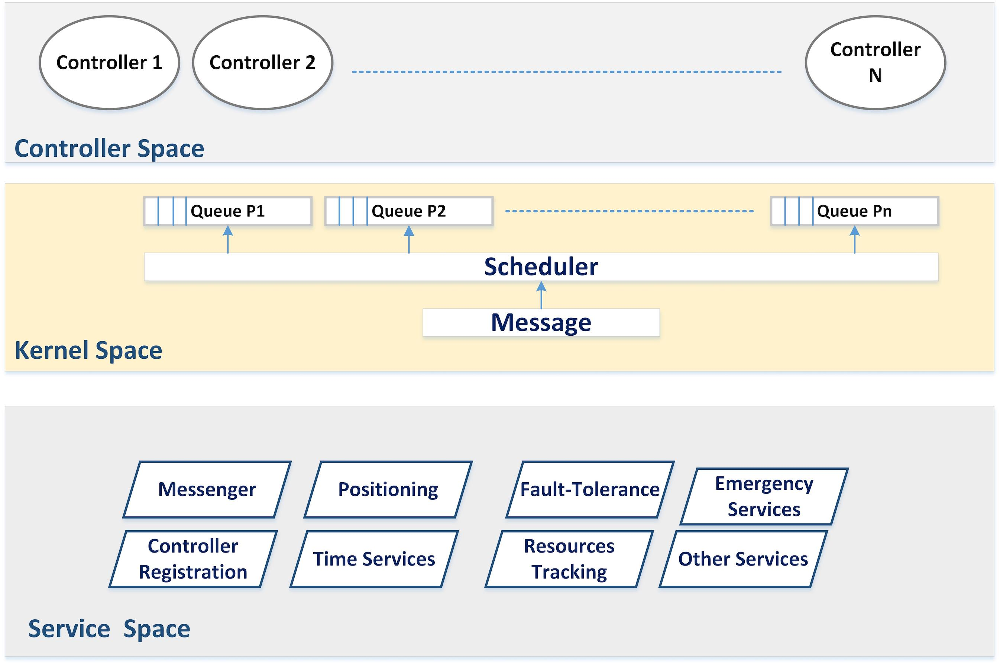
فضاء المتحكم: ينفذ كل متحكم بوصفه مكوناً قائماً بذاته، وتتفاعل جميع المكونات بعضها مع بعض كما أوضحنا سابقاً.
فضاء النواة: هذا الفضاء مسؤول عن جدولة الرزم بناءً على أولويتها وحساسيتها الزمنية، كما تسندها أدوات متحكم الزمن الحقيقي. فعلى سبيل المثال، ينبغي خدمة إشارة قادمة من سيارة إسعاف أو عربة إطفاء أولاً. يمكن تنفيذ طيف واسع من خوارزميات الجدولة hou2009theory . ولكل تطبيق IoT متطلبات QoS مختلفة، وبناءً على هذه المتطلبات ستختار خوارزمية الجدولة المناسبة.
بعد قرارات الجدولة، تسند الرزمة إلى طابور محدد بناءً على أولويتها، وكذلك بناءً على المواقع الفيزيائية للمرسل/المستقبل المتنقلين. ولذلك فمن الضروري توفير خدمة تتبع الموقع للجدولة الواعية بالموقع في الزمن الحقيقي. وجدولة الطوابير في الشبكات مدروسة جيداً srikant2013communication ، ويمكن توسيعها للجدولة المثلى الخاضعة للمواعيد النهائية والأولويات hou2009theory .
فضاء الخدمات: تُغلف خدمات متنوعة داخل هذا الفضاء لتمكين اتخاذ القرار في الزمن الحقيقي وتحسين الاتصال الشبكي:
-
1.
خدمة المراسلة: تحافظ هذه الخدمة على اتصال سلس بين جميع المتحكمات في الطبقة نفسها عبر واجهات API الغربية/الشرقية في الشكل 3؛ خذ مثلاً المتحكمات داخل الطابق نفسه في مبنى ذكي. وبالإضافة إلى ذلك، تعالج الاتصال بين طبقات التحكم الموجودة في طوابق مختلفة عبر SDN.
-
2.
خدمة تتبع الموقع: تتعقب هذه الخدمة مواقع العقد المتنقلة عبر الزمن. ولاحظ أن موقع العقدة قد يتغير نتيجة قرار تحكم (مثلاً، في نظام نقل يوجه متحكم محلي سيارة عند تقاطع).
-
3.
خدمة وسم السرعة: يعد تقدير سرعة العقد المتنقلة وحسابها مفيداً للتنبؤ بموقعها عبر الزمن (مثلاً، باستخدام أدوات تتبع مثل ترشيح كالمان)، كما في التنبؤ بموعد وصول سيارة إلى مسار محدد لتجنب التصادم أو الجمود.
-
4.
خدمة تحمل الأعطال: يعد تحمل الأعطال حاسماً في نظم IoT واسعة النطاق. وتنفذ مجموعة من الحلول والسياسات داخل هذه الخدمة للتعافي من إخفاقات العتاد/البرمجيات (أي كيفية الانتقال إلى متحكم قريب في حال فشل المتحكم المحلي).
-
5.
خدمة تسجيل المتحكم: هذه الخدمة مسؤولة عن إدراج متحكم جديد مع معلوماته ذات الصلة للحفاظ على تحديث النظام.
-
6.
خدمة وسم الزمن: تنفذ وحدة مخصصة داخل طبقة البرمجيات الوسيطة لتسجيل أزمنة الأحداث الماضية والحاضرة والمستقبلية، مثل المعلومات المستشعرة وإجراءات التحكم.
-
7.
خدمة ترجمة الزمن: في CPS واسعة النطاق، لا تتفق الساعات freris2011fundamental ، ومن الأساسي تحويل زمن الرزمة إلى زمن المتحكم، والعكس بالعكس.
-
8.
خدمة تزامن الزمن: يعد تزامن الساعات الدقيق أداة أساسية للتنسيق الموزع في CPS. فهو يؤثر في الأداء وكذلك السلامة freris2011fundamental ، مع أمثلة تشمل بروتوكولات لاسلكية مثل MAC، وتدوير الواجب، والتحكم بالتشكيل، والتزامن في قواعد البيانات، وغير ذلك. وتحقيقاً لهذه الغاية، تكتسب الخوارزميات ذات قابلية التوسع العالية وأعباء الاتصال والحوسبة المنخفضة أهمية خاصة للتنفيذ في البرمجيات الوسيطة RK ; RK2 ; nfrer_algocdc .
-
9.
خدمة تتبع الموارد: تستهدف هذه الخدمة تتبع الموارد في النظام كله بقصد توفير موازنة الحمل والإنصاف بين المستخدمين.
-
10.
خدمات الطوارئ: تتعقب هذه المجموعة من الخدمات المكونات وتتخذ إجراءات عندما تصبح غير متاحة أو تفشل.
2.6 مستويا الاتصال والتحكم
تتميز البنية المقترحة بتفاعل بين مستويين للاتصال والتشغيل، هما الأفقي والرأسي. يوضح الشكل 10 منظراً عاماً لهذين المستويين، مع تفصيل إضافي فيما يلي (لاحظ أننا نستخدم تطبيق النقل لأغراض التوضيح، وهو ما يفسر وجود السيارات في الشكل 10).
-
1.
المستوى الرأسي (تدفق التحكم): كما أوضحنا أعلاه، يتدفق التحكم في الشبكة بطريقة هرمية. في أعلى مستوى تماماً يوجد متحكم الجذر، بينما تقع جميع العقد المتنقلة (مثل المركبات في نظام النقل) في المستوى الأدنى. وتملك الطبقة العليا قدرة تنسيقية على طبقتها الدنيا المباشرة، وامتيازات أعلى في حل النزاعات. وتكون طبقة البرمجيات الوسيطة مسؤولة عن دمج المتحكمات في الطبقة نفسها وتنسيقها وإدارة الاتصال عبر طبقات مختلفة. ويرتبط عدد الطبقات في المستوى الرأسي ارتباطاً وثيقاً بحجم الشبكة في المستوى الأفقي (مثلاً، يعتمد على أحجام عناقيد المناطق مثل مرسلي المناطق في النقل الحضري).
-
2.
المستوى الأفقي (تدفق البيانات): يعكس هذا المستوى الاتصال بين الوكلاء المتنقلين والمتحكمات داخل الطبقة نفسها (مثل الاتصال المباشر بين المركبات القريبة، وبين المرسلات في الطبقة نفسها). استحضر المفاضلة بين أحجام التقسيم وعمق المستوى الرأسي: فعندما تُعنقد العقد أفقياً في مجموعات أصغر (مناطق)، يلزم عدد أكبر من منسقي العناقيد ومنسقي المناطق؛ ويؤثر ذلك في دقة النظام كله واستجابته وأدائه وأمنه، وكذلك في تكاليف البنية التحتية، وهي أمور ينبغي لمصممي النظام أخذها جميعاً في الحسبان.
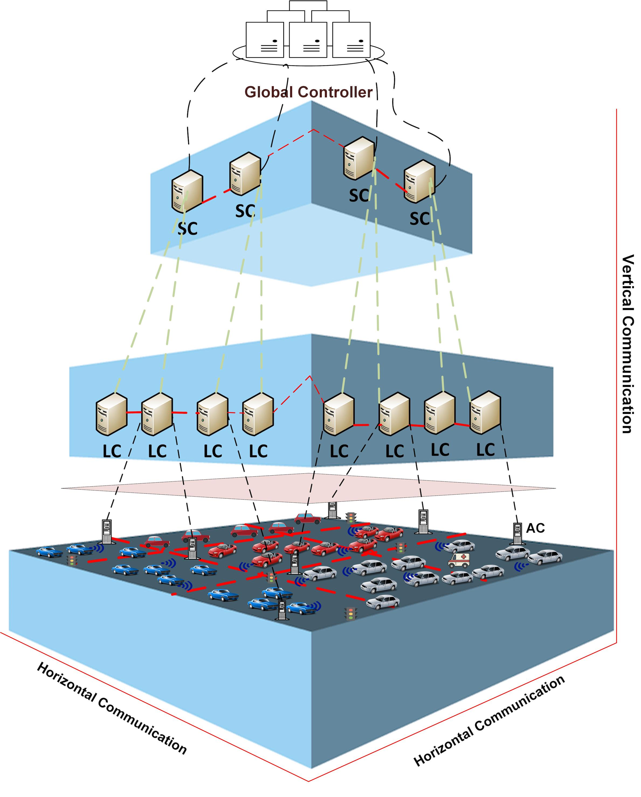
عملية اتخاذ القرار
تنجز عملية اتخاذ القرار بطريقة نظامية بواسطة النظام المقترح. ويعزز هذا التصور الجديد عملية اتخاذ القرار في الزمن الحقيقي، وموثوقية النظام، وأمنه، وقابليته للتوسع. وفيما يلي نقاش موجز لتدفق رزم التحكم.
2.6.1 المركزي مقابل اللامركزي / الموزع
يمثل مستوى التحكم والإدارة الفعال مفتاحاً لانتشار النظام. ويعد التحكم الموزع جزءاً لا يتجزأ من التعامل مع أحجام هائلة من حركة مرور الشبكة عبر استقلالية لامركزية تحقق تشغيلاً نظامياً قابلاً للتوسع ومستداماً ومتيناً وقابلاً للتكيف في بيئة عالية الديناميكية (خذ مثلاً فشل إشارة مرور أو إغلاق مسار بسبب حادث أو كارثة طبيعية). ومع ذلك، فإن السؤال: “هل نوزع أم لا نوزع؟” لا تكون إجابته سهلة دائماً: فقد تسبب الاتصالات والتفاعلات المحلية نزاعاً عبر عدة مستويات نظامية، مما يتطلب تحكماً إشرافياً لحله، وتزداد تعقيداته مع نمو حجم الشبكة. وتهدف البنية المقترحة إلى توظيف فوائد العالمين (المركزي واللامركزي / الموزع) بطريقة منهجية متماسكة.
2.6.2 تدفق رزم التحكم
تؤثر الطريقة المنهجية المقترحة لعملية اتخاذ القرار تأثيراً أساسياً في تدفق رزم التحكم. تُحصد المعلومات من طبقات التحكم الواقعة تحتها وتُوصل إلى المتحكمات في الطبقات الأعلى التي تتخذ قرارات وإجراءات تحكم أعلى مستوى. وفي الوقت نفسه، تحتاج المتحكمات في الطبقات الواقعة تحتها إلى التعاون والتواصل بعضها مع بعض، وهي مسؤولة عن التحكم في جميع كيانات النظام المسندة إليها باتخاذ الإجراءات المناسبة وتمرير المعلومات إلى المتحكمات العليا في طبقة أعلى. وإجمالاً، يعالج هذا على نحو متنوع في سياقات مختلفة: فعلى سبيل المثال، تُثبت وتنفذ وحدة التدقيق والفرز الأمنية داخل متحكم SDSecurity، الموصوفة سابقاً، على جميع المتحكمات المعرفة برمجياً، لكنها لا تنفذ العمليات نفسها تماماً في كل مكون. وبالخلاصة، يمكن تصنيف اتخاذ القرار (من بين أمور أخرى ) إلى:
-
•
قرارات ذاتية: يمكن لعقدة معينة أن تتخذ قراراً بنفسها دون التوافق مع متحكمات أو منسقات أخرى في المستويات نفسها أو الأعلى.
-
•
قرارات منسقة: لا تكون العقد مستقلة بالكامل في اتخاذ قرار معين محلياً، وتكون هناك حاجة إلى التنسيق مع الطبقات الأعلى لاتخاذ إجراءات إضافية.
ينطبق هذا التصنيف بالاستقراء على جميع مستويات هرمية اتخاذ القرار؛ ويمثل الشكل 11 سير العمل في النظام.
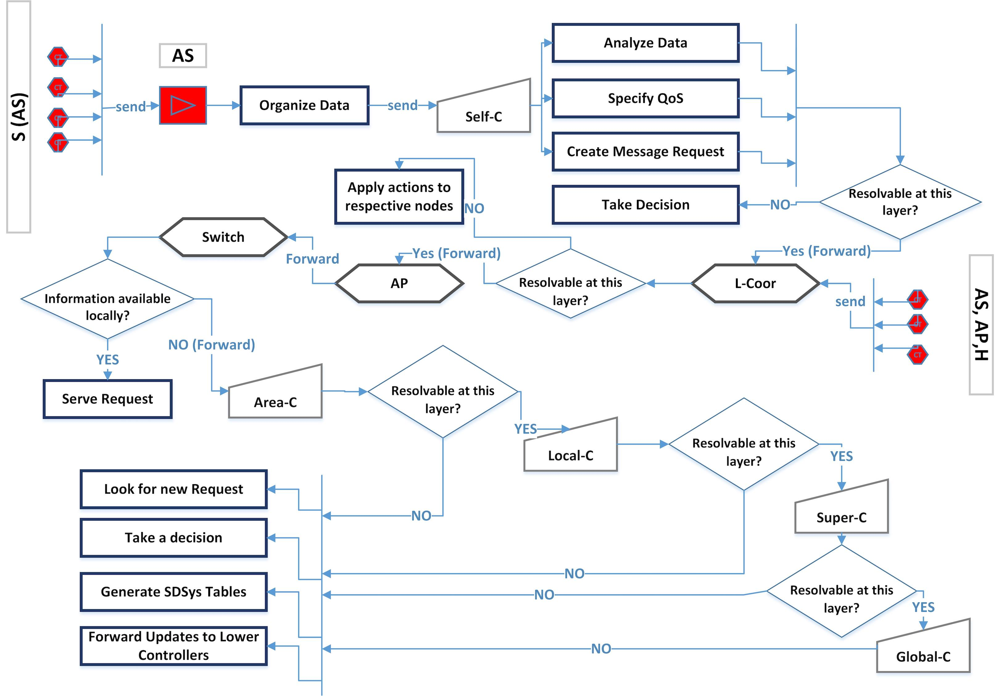
بنية الرزمة: لدعم البنية المقترحة، من المهم أيضاً تعريف سمات الرزم المطلوبة للتحكم والاتصال والجدولة؛ مثل معلومات الموضع والتوقيت الخاصة بالوكيل، وأولوية الرزمة، وأمور كثيرة أخرى؛ راجع الشكل 12.
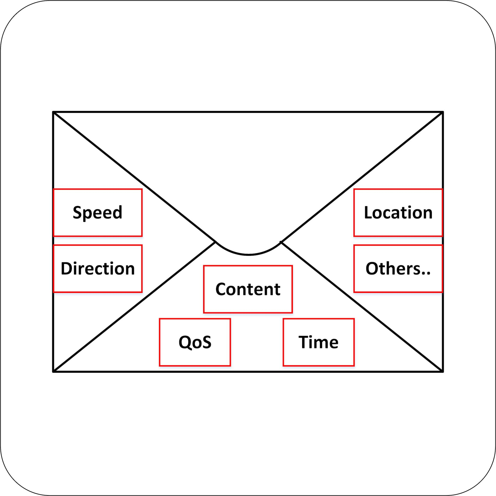
يعرض إعداد النظام في الخوارزمية 12.
[h] خوارزمية إعداد النموذج المقترح {algorithmic}[1] \ProcedureSetup \Stateابدأ \StateSTEP1: شغّل المتحكم العام وهيئه. \StateControllerLIST[]= None \StateSuperConLIST[]= None \StateLocalConLIST[]= None \StateAreaConLIST[]= None
STEP2: أنشئ كائنات المتحكمات وهيئها. \StateControllerLIST[] أنشئ وهيئ قائمة المتحكمات. \Stateأنشئ نسخاً من SD Controller وأسند معرفاً لكل واحدة \Stateلكل ، ، طالما \State Controller LIST[i] instant(i)_ID
STEP3: أسند الأنواع لكل متحكم وأنشئ مجموعات فرعية. \StateSuperConLIST[] ControllerLIST[] \StateLocalConLIST[] ControllerLIST[] \StateAreaConLIST[] ControllerLIST[]
STEP4: يقسم المتحكم العام بيئة النظام إلى نطاقات فرعية ويسند جميع المتحكمات. \StatePartitionLIST[] أنشئ وهيئ قائمة التقسيمات. \Stateأسند متحكم منطقة لكل تقسيم \Stateلكل ، ، طالما \State PartitionLIST[i] AreaConLIST[i]. \State \Stateأسند “متحكمات المناطق” إلى المتحكمات المحلية المرتبطة \Stateأسند “المتحكمات المحلية” إلى المتحكمات العليا المرتبطة \Stateأسند “المتحكمات العليا” إلى المتحكم العام
STEP5: هيئ جميع الوحدات المعرفة برمجياً داخل كل متحكم. \Stateلكل ، ، طالما ) \State \While
SDN_Unit Forwarding_Table \State SDIoT_Unit Sensors_Table \State SDSecurity_Unit Policies_Table \State SDStorage_Unit Storage_Table \State SDC_Unit Compute_Table
نهاية الحلقة \StateSTEP6: شغّل المتحكمات.
STEP7: يلتقط متحكم الجذر صوراً من جميع المتحكمات ويحتفظ بحالة كل واحد. \Stateلكل ، ، طالما ) \State Image ContollerLIST[i].captureState \State Root.Receive() Image \StateSTEP8: يمرر متحكم الجذر جميع صور المتحكمات إلى المتحكمات الواقعة تحته. \Stateانتهى \EndProcedure
2.7 سمات النموذج المقترح
تلخص السمات الرئيسة للبنية المقترحة بإيجاز فيما يلي:
-
1.
الزمن الحقيقي: تعزز بنية النظام المقترحة اتخاذ القرار في الزمن الحقيقي بثلاث طرائق: (أ) إضافة طبقة برمجيات وسيطة لتيسير الاتصال والتفاعل بين طبقات النظام المختلفة وتوسيعهما، (ب) تنفيذ الخدمات والمتحكمات كمكونات ذاتية في البرمجيات الوسيطة، (ج) تطبيق جدولة رزم قائمة على QoS عبر مستويات متعددة.
-
2.
الموثوقية والأمن: يمكن ضمان إتاحة الخدمة، في وجود مستخدمين خبيثين، عبر وصف طرائق اتخاذ إجراءات التحكم والوصول إلى البيانات. ويمكن تحقيق ذلك بدوره عبر تقاسم المسؤوليات وتوزيعها على عدة وحدات نظامية، وتوظيف التكرارات التي تحسن الصمود أمام نقاط الفشل أو الهجوم المفردة.
-
3.
المرونة وقابلية التوسع: في CPS واسعة النطاق والمتقلبة، يلزم تحكم وإدارة عالي التردد لأن بعض العقد قد تتعرض للفشل أو لهجوم سيبراني. ويمكن لحلنا المقترح تلبية هذه الاعتبارات بطريقة قابلة للبرمجة، سريعة وبسيطة وذاتية التكوين. وعلاوة على ذلك، يجمع تصميمنا بين الاستشعار الموزع اللامركزي، واسترجاع المعلومات، والتحكم لضمان قابلية التوسع حتى لملايين العقد المتنقلة.
3 النتائج التجريبية
في هذا القسم، نصف منصة الاختبار بالمحاكاة ونعرض عدة نتائج تجريبية لإبراز مزايا اعتماد إجراءات تحكم معرفة برمجياً لتطبيقات إنترنت الأشياء من حيث الكفاءة وقابلية التكيف.
3.1 بيئة المحاكاة
نُفذت بيئة منصة الاختبار لدينا عبر تثبيت Mininet 2.2.0rc1 VM Mininet على Oracle Virtual Box وربطها عن بعد بنظام التشغيل Ubuntu. واستخدمنا Python لغة للبرمجة ووسعنا متحكم POX الخاص بـ Mininet (أي User_Switch) مع أصنافه الرئيسة للمضيف كي نلتقط عدة عناصر من البنية المقترحة.
3.2 سيناريوهات الاختبار والتجارب
اختبرنا مجموعة من السيناريوهات لأحجام وطوبولوجيات شبكية متغيرة. تلتقط طوبولوجيا الشبكة بواسطة رسم بياني يتكون من رؤوس (متحكمات ومستخدمين نهائيين)، ، مع حواف تحدد الاتصال الممكن بين كيانات النظام. واعتمدنا في تجاربنا شجرة بعمق 3: يقع رأس المتحكم العام عند الجذر، وتقع المتحكمات المحلية في المستوى الأول، وتقع المفاتيح (2 مفاتيح لكل متحكم محلي) في المستوى الثاني، أما المضيفون (المستخدمون) فيقعون في المستوى الثالث؛ ويؤخذ عدد المستخدمين متغيراً. وفي جميع حالات الاختبار، اخترنا تدفقات رزم تُسحب فيها عقدتا المصدر والوجهة عشوائياً وفق توزيع منتظم.
درسنا أربعة سيناريوهات عبر تغيير مجموعة فرعية من المعلمات في نموذجنا مع تثبيت غيرها، كما هو موضح في الجدول 1: يمثل عمود الطلبات العدد الكلي للطلبات المخدومة، ويشير عمود المتحكمات إلى عدد المتحكمات المحلية في طوبولوجيتنا، وعمود المستخدمين إلى عدد المستخدمين لكل مفتاح، أما عمود الزمن فيدل على مجموع زمن التهيئة وزمن الاختبار.
| NO |
|
Controllers | Users | Time | |
| Sc.1 | 10,000 | Changed | 8 | Tested | |
| Sc.2 | 10,000 | 8 | Changed | Tested | |
| Sc.3 | Tested | 8 | 8 | Changed | |
| Sc.4 | Tested | Changed | Changed | Tested |
يوضح الشكل 13 أثر تغيير عدد المتحكمات المحلية والمستخدمين في زمن التهيئة للسيناريوهين الأولين. نستخدم الأعمدة الزرقاء لإظهار الزمن المطلوب لعدد متغير من المتحكمات مع تثبيت عدد المضيفين لكل مفتاح عند 8 (السيناريو 1). ونستخدم الأعمدة الحمراء لتوضيح الزمن اللازم لعدد متغير من المضيفين لكل مفتاح مع عدد ثابت قدره 8 من المتحكمات المحلية (السيناريو 2). لوحظ أن زيادة عدد المتحكمات تتطلب زمناً أكبر للتهيئة مقارنة بزيادة عدد المستخدمين في النظام عند الأعداد الأكبر، بينما لوحظ العكس عند الأعداد الأصغر. بالإضافة إلى ذلك، سُجل زمن متوازن عندما يساوي عدد المتحكمات عدد المضيفين لكل مفتاح (وكلاهما يساوي 8).
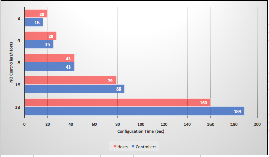
يبين الشكل 14 العدد الكلي للطلبات التي خدمها نظامنا لعدد 8 من المتحكمات المحلية و8 من المضيفين لكل مفتاح على امتداد عدة فترات زمنية. ويلاحظ أن النظام، بحكم التصميم، يمنح كل رزمة زمناً تنفيذياً متساوي الاحتمال على مدى عدة فترات زمنية بحيث يزداد عدد الطلبات المخدومة خطياً مع الزمن.
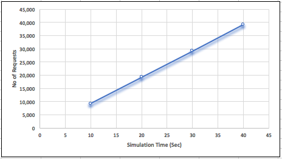
يوضح الشكل 15 العدد الكلي للطلبات المخدومة وزمن اختبار المحاكاة عبر ثلاثة تكوينات شبكية مختلفة لعدد كلي ثابت من المستخدمين (يساوي حاصل ضرب عدد المتحكمات المحلية * عدد المفاتيح لكل متحكم محلي * عدد المضيفين لكل مفتاح). لاحظ أن 8 من المتحكمات المحلية مع 8 مضيفين/مفتاح تخدم عدداً يزيد قليلاً على 16 متحكمات و4 مضيفين بزمن أقل. ويكشف ذلك فائدة الحصول على أداء أمثل بأدنى كلفة تهيئة للطوبولوجيات المتوازنة.
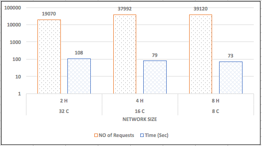
4 الاستنتاجات
اقترحنا بنية معرفة برمجياً للنظم السيبرانية الفيزيائية وتطبيقات إنترنت الأشياء. وحددنا المتطلبات الرئيسة لمختلف تطبيقات إنترنت الأشياء من حيث الأداء والأمن وجودة الخدمة والتشغيل في الزمن الحقيقي. كما بينا كيف يستغل النموذج المقترح القدرة الحاسوبية لعدد كبير من مكونات النظام (المنسقات والمتحكمات والحساسات والأجهزة المحمولة) للتحكم في النظم بطريقة قابلة للتوسع ومرنة مع إعطاء الأولوية للأمن السيبراني. وتنفذ جميع المكونات كعقد معرفة برمجياً داخل طبقة البرمجيات الوسيطة، ويتدفق التحكم والمعلومات على نحوين، من أعلى إلى أسفل ومن أسفل إلى أعلى. وأخيراً، بنينا أداة منصة اختبار للمحاكاة بلغة Python لقياس أداء النموذج المقترح، وأجرينا تجارب موسعة تكشف الفوائد الرئيسة للنموذج المقترح.
References
- (1) Al-Ayyoub, M., Jararweh, Y., Benkhelifa, E., Vouk, M., Rindos, A., et al.: A novel framework for software defined based secure storage systems. Simulation Modelling Practice and Theory (2016)
- (2) Alur, R., Courcoubetis, C., Halbwachs, N., Henzinger, T.A., Ho, P.H., Nicollin, X., Olivero, A., Sifakis, J., Yovine, S.: The algorithmic analysis of hybrid systems. Theoretical Computer Science 138(1), 3–34 (1995)
- (3) Cardenas, A.A., Amin, S., Sastry, S.: Secure control: Towards survivable cyber-physical systems. In: 28th IEEE International Conference on Distributed Computing Systems Workshops (ICDCS), pp. 495–500 (2008)
- (4) Darabseh, A., Al-Ayyoub, M., Jararweh, Y., Benkhelifa, E., Vouk, M., Rindos, A.: SDSecurity: A software defined security experimental framework. In: IEEE International Conference on Communication Workshop (ICCW), pp. 1871–1876 (2015)
- (5) Darabseh, A., Al-Ayyoub, M., Jararweh, Y., Benkhelifa, E., Vouk, M., Rindos, A.: SDStorage: A software defined storage experimental framework. In: IEEE International Conference on Cloud Engineering (IC2E), pp. 341–346 (2015)
- (6) Darabseh, A., Freris, N.: A software defined architecture for cyberphysical systems. In: 4th IEEE International Conference on Software Defined Systems (SDS), pp. 54–60 (2017)
- (7) Darabseh, A., Freris, N., Jararweh, Y., Al-Ayyoub, M.: SDCache: Software defined data caching control for cloud services. In: 4th IEEE International Conference on Future Internet of Things and Cloud (FiCloud) (2016)
- (8) De Oliveira, R., Shinoda, A., Schweitzer, C., Rodrigues Prete, L.: Using Mininet for emulation and prototyping software-defined networks. In: IEEE Colombian Conference on Communications and Computing (COLCOM), pp. 1–6 (2014)
- (9) Duan, X., Freris, N., Cheng, P.: Secure clock synchronization under collusion attacks. In: Proceedings of the 54th Allerton Conference on Communication, Control and Computing, pp. 1142–1148 (2016)
- (10) Fawzi, H., Tabuada, P., Diggavi, S.: Secure estimation and control for cyber-physical systems under adversarial attacks. IEEE Transactions on Automatic Control 59(6), 1454–1467 (2014)
- (11) Fontes, R.R., Afzal, S., Brito, S.H., Santos, M.A., Rothenberg, C.E.: Mininet-WiFi: Emulating software-defined wireless networks. In: 11th International Conference on Network and Service Management (CNSM), pp. 384–389 (2015)
- (12) Freris, N., Borkar, V., Kumar, P.R.: A model-based approach to clock synchronization. In: Proceedings of the 48th IEEE Conference on Decision and Control (CDC), pp. 5744–5749 (2009)
- (13) Freris, N., Graham, S., Kumar, P.R.: Fundamental limits on synchronizing clocks over networks. IEEE Transactions on Automatic Control 56(6), 1352–1364 (2011)
- (14) Freris, N., Kowshik, H., Kumar, P.R.: Fundamentals of Large Sensor Networks: Connectivity, Capacity, Clocks, and Computation. Proceedings of the IEEE 98(11), 1828–1846 (2010)
- (15) Freris, N., Öçal, O., Vetterli, M.: Compressed Sensing of Streaming data. In: Proceedings of the 51st Allerton Conference on Communication, Control and Computing, pp. 1242–1249 (2013)
- (16) Freris, N., Patrinos, P.: Distributed computing over encrypted data. In: Proceedings of the 54th Allerton Conference on Communication, Control and Computing, pp. 1116–1122 (2016)
- (17) Freris, N., Zouzias, A.: Fast distributed smoothing of relative measurements. In: 51st IEEE Conference on Decision and Control (CDC), pp. 1411–1416 (2012)
- (18) Gubbi, J., Buyya, R., Marusic, S., Palaniswami, M.: Internet of Things (IoT): A vision, architectural elements, and future directions. Future Generation Computer Systems 29(7), 1645–1660 (2013)
- (19) Gungor, V.C., Hancke, G.P.: Industrial wireless sensor networks: Challenges, design principles, and technical approaches. IEEE Transactions on Industrial Electronics 56(10), 4258–4265 (2009)
- (20) Gupta, P., Kumar, P.R.: The capacity of wireless networks. IEEE Transactions on information theory 46(2), 388–404 (2000)
- (21) Hou, I.H., Borkar, V., Kumar, P.R.: A theory of QoS for wireless. In: IEEE INFOCOM, pp. 486–494 (2009)
- (22) Jain, R., Paul, S.: Network virtualization and software defined networking for cloud computing: a survey. IEEE Communications Magazine 51(11), 24–31 (2013)
- (23) Jararweh, Y., Al-Ayyoub, M., Darabseh, A., Benkhelifa, E., Rindos, A.: Software defined cloud: Survey, system and evaluation. Future Generation Computer Systems 58, 56–74 (2016)
- (24) Jararweh, Y., Al-Ayyoub, M., Darabseh, A., Benkhelifa, E., Vouk, M., Rindos, A.: SDIoT: a software defined based internet of things framework. Journal of Ambient Intelligence and Humanized Computing 6(4), 453–461 (2015)
- (25) Kim, K.D., Kumar, P.R.: Architecture and mechanism design for real-time and fault-tolerant etherware for networked control. In: Proceeding of the 17th IFAC World Congress, pp. 9421–9426 (2008)
- (26) Kim, K.D., Kumar, P.R.: Cyber–physical systems: A perspective at the centennial. Proceedings of the IEEE 100(Special Centennial Issue), 1287–1308 (2012)
- (27) Kim, K.D., Kumar, P.R.: Real-time middleware for networked control systems and application to an unstable system. IEEE Transactions on Control Systems Technology 21(5), 1898–1906 (2013)
- (28) Lee, E.A.: Cyber physical systems: Design challenges. In: 11th IEEE International Symposium on Object and Component-Oriented Real-Time Distributed Computing (ISORC), pp. 363–369 (2008)
- (29) Lee, E.A., Seshia, S.A.: Introduction to embedded systems: A cyber-physical systems approach. MIT Press (2011)
- (30) Mitola, J.: Cognitive radio—an integrated agent architecture for software defined radio. Ph.D. thesis, Royal Institute of Technology (KTH) (2000)
- (31) Rajkumar, R.R., Lee, I., Sha, L., Stankovic, J.: Cyber-physical systems: the next computing revolution. In: Proceedings of the 47th Design Automation Conference, pp. 731–736 (2010)
- (32) Satchidanandan, B., Kumar, P.R.: Dynamic watermarking: Active defense of networked cyber–physical systems. Proceedings of the IEEE 105(2), 219–240 (2017)
- (33) Sopasakis, P., Freris, N., Patrinos, P.: Accelerated reconstruction of a compressively sampled data stream. In: 24th European Signal Processing Conference (EUSIPCO) (2016)
- (34) Srikant, R., Ying, L.: Communication networks: an optimization, control, and stochastic networks perspective. Cambridge University Press (2013)
- (35) Vlachos, M., Freris, N., Kyrillidis, A.: Compressive mining: fast and optimal data mining in the compressed domain. The VLDB Journal 24(1), 1–24 (2014)
- (36) Wette, P., Draxler, M., Schwabe, A., Wallaschek, F., Zahraee, M., Karl, H.: Maxinet: Distributed emulation of software-defined networks. In: IFIP Networking Conference, pp. 1–9 (2014)
- (37) Yampolskiy, M., Horvath, P., Koutsoukos, X.D., Xue, Y., Sztipanovits, J.: Taxonomy for description of cross-domain attacks on CPS. In: Proceedings of the 2nd ACM International Conference on high confidence networked systems, pp. 135–142 (2013)
- (38) Zoumpoulis, S., Vlachos, M., Freris, N., Lucchese, C.: Right-protected data publishing with provable distance-based mining. IEEE Transactions on Knowledge and Data Engineering 26(8), 2014–2028 (2014)
- (39) Zouzias, A., Freris, N.: Randomized Extended Kaczmarz for solving least squares. SIAM Journal on Matrix Analysis and Applications 34(2), 773–793 (2013)
- (40) Zouzias, A., Freris, N.: Randomized gossip algorithms for solving Laplacian systems. In: Proceedings of the 14th European Control Conference (ECC), pp. 1920–1925 (2015)